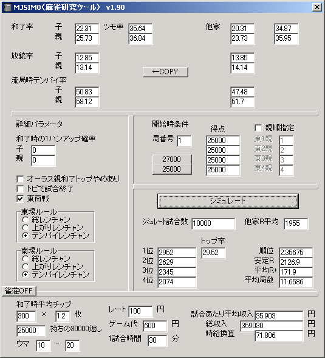

麻雀に強さは存在しない
とつげき東北
概要
ある「実力」の人が何試合打った場合に、結果（平均順位or安定Ｒ）からどの程度実力を正確に計測できるか、ということを以前に論文で示した。
そこでは、例えば5000試合の安定Ｒから、当人の実力をかなり小さな誤差で把握できることが明らかにされた。
では、平均順位ではなく金銭的な収入を基準に考えるとどうだろうか？
方法
シミュレータによって、ある一定の「強さ」を持つ人に1万試合行わせる。実力的には第二安定R2112相当（第二最強水準）で和了率・放銃率は適当に割り振った。
MJSIM0は、平均順位の計測（安定Ｒ表示）に加え、レートやチップやオカウマやゲーム代を全て加味した「リアルでの金銭収支」の計測が可能である。
これを100回繰り返し、平均順位のばらつき方と、金銭収支のばらつき方を比較する。

データ
収入 安定R
-447820 2104
355200 2118
-190530 2115
-578940 2091
-1231230 2089
836660 2142
-106340 2120
-755960 2097
-301330 2106
-511510 2099
-119940 2110
-968770 2088
-175670 2116
46120 2112
-855740 2086
-638330 2103
-436200 2103
70640 2121
-54020 2112
756250 2141
-150740 2117
251350 2126
-109130 2114
-143060 2110
-570710 2102
-37400 2119
-84690 2109
-103270 2122
-20740 2119
63050 2122
-539190 2099
-397740 2103
-428440 2104
-317180 2111
-267180 2113
-1181430 2071
-562080 2101
-940350 2099
357840 2125
315750 2120
232570 2131
-472280 2099
-795190 2090
-78360 2118
-384220 2103
13640 2111
-306890 2107
-599030 2107
228180 2121
304010 2125
-415690 2108
245310 2120
-157090 2119
-150740 2115
293000 2129
-400410 2106
-880880 2089
-372920 2102
-379350 2102
-295170 2105
-118300 2114
-319820 2113
51840 2126
-696520 2103
-141860 2108
-445930 2107
383680 2123
-406180 2105
-368620 2107
568110 2133
-788330 2093
333510 2125
-519630 2105
-450930 2101
-168300 2108
-413730 2100
-721150 2098
475440 2129
-715720 2094
-295910 2110
-797520 2096
-490110 2105
125010 2125
-129310 2115
275530 2132
242110 2126
-247670 2111
38820 2113
-523740 2098
-285420 2112
-470290 2101
-730950 2097
193780 2129
-645900 2097
-282040 2115
-294560 2115
-599490 2096
-163660 2110
-330700 2110
359030 2127
データ数 100（各々10000試合）
【収入】
平均 -240597円
標準偏差 402414円
【安定R】
平均 2110.18
標準偏差 12.49
・1000万試合の場合
安定R平均 2111.5
10000試合あたり収入平均 -190395円
和了率を0.5％落とした場合
収入
-2309250
-1413570
-1234160
-987170
-1315130
-1937990
-1320270
-1547690
-1323360
-710970
-1562890
-1229010
-516120
-1447170
-1307220
-1381610
-1687490
-785300
-1042820
-1594210
-707640
-1475770
-644120
202700
-1756270
-1000250
-891270
-1307410
-1681540
-787020
-1055580
-1228560
-731470
-1220880
-1349620
-945520
-1085340
-1130610
-1293860
-1206910
-1014330
-600130
-699820
-880320
-949900
-1219980
-1455450
-893070
-356410
-102190
-1377170
-1214600
-1483830
-1286110
-1710940
-2496060
-1038880
-1171060
-1617660
-1373000
-1152680
-1205630
-909250
-1142680
-1744290
-1260260
-1541840
-1343930
-2131290
-987450
-750290
-845010
-1039770
-1724090
-1560700
-1859090
-258250
-917570
-1938040
-1683390
-387040
-727290
-846540
-1239100
-757120
-1079030
-1834810
-881080
-1120140
-571010
-1412220
-1479170
-933900
-1846480
-1508560
-1657660
-1759100
-1378250
-1494390
-1090110
【収入】
平均 -1208890円
標準偏差 451779円
・和了率を0.5％落とした場合の100万試合の場合
安定R平均 2084
10000試合あたり収入平均 -1247589円
考察
まず安定R（平均順位）による実力の計測を見てみよう。
本来の実力が安定R2112であり、実測の安定R平均は2110、標準偏差が12.5であることから、10000試合の結果から計測した場合、平均から+-37程度にほとんどが収まることがわかる。
これは平均順位で言えば+-0.03であり、ある程度正確に実力を計測できていることがわかる。
では、収入による実力の計測を見る。
1000万試合の平均から、10000試合あたり平均収入は-190395円となるべきだが、これと全く同じ実力を持つ100人が実際に10000試合単位で収入平均をとると、-240597円となった。
標準偏差が40万円以上もあることから、4人に1人は「おれは1万試合で20万稼いだ」ことになり、また4人に1人は「おれは1万試合で60万すった」ことになる。
もう一度確認するが、彼らは一様に同じ実力である。しかし10000試合で、収入にして平気で40万円～80万円という大差がつく。
普通の感覚で言えば、10000試合で40万円も収入に差がつけば「あいつはすげー強い」「あいつは弱い」という比較をするものだ。
しかし実際はそれは単なるよくある偶然であり、思い過ごしでしかないのだが。